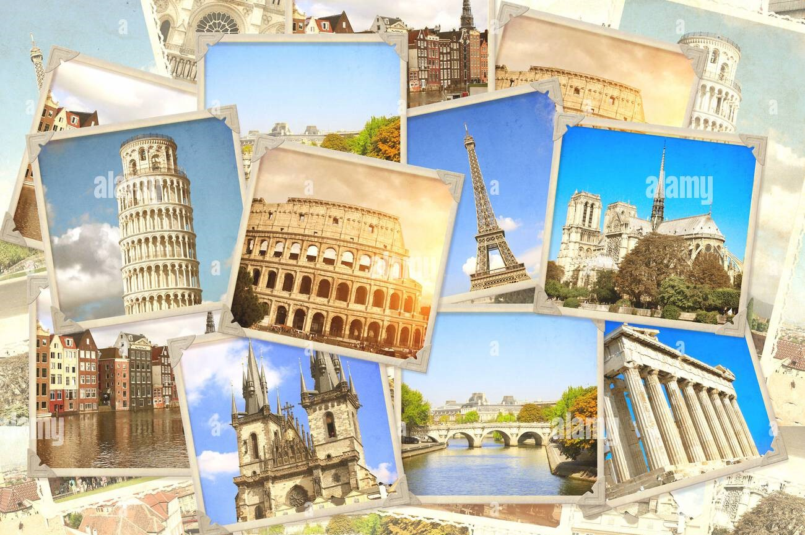

detail Information about all continent's heritage places
1.Aisa

Here are a few notable heritage sites across Asia that showcase the continent's rich history and diverse cultures:
- Great Wall of China (China) - This iconic structure spans thousands of miles and was built to protect against invasions. It represents Chinese ingenuity and resilience.
- Taj Mahal (India) - A UNESCO World Heritage Site, this stunning mausoleum built by Mughal Emperor Shah Jahan in memory of his wife is an architectural masterpiece and a symbol of love.
2. North-America

Here are some notable heritage sites in North America that highlight the continent's diverse history and cultures:
- Statue of Liberty (USA) - A symbol of freedom and democracy, this iconic statue in New York Harbor was a gift from France and is a UNESCO World Heritage Site.
- Chichen Itza (Mexico) - An ancient Mayan city, this UNESCO site is known for its impressive pyramid, El Castillo, and other architectural wonders that reflect Mayan culture.
3. South-America
South America is rich in cultural and natural heritage, boasting numerous UNESCO World Heritage Sites that reflect its diverse history and landscapes. Here are some notable sites:
- Machu Picchu(Peru) - An ancient Incan city set high in the Andes Mountains, renowned for its archaeological significance and stunning views. It reflects the Inca civilization's architectural and agricultural innovations.
- Christ the Redeemer(Brazil) - This iconic statue in Rio de Janeiro is not only a symbol of Christianity but also a cultural landmark, showcasing Brazilian art and architecture.
3. Europe
Here’s a list of more famous UNESCO World Heritage Sites in Europe, each known for its significance and popularity:
- Eiffel Tower - An iconic iron lattice tower, a symbol of French engineering and culture, offering panoramic views of the city.
- Acropolis of Athens - An ancient citadel featuring the Parthenon, symbolizing the glory of classical Greece.
4. Africa
Here’s a brief overview of notable UNESCO World Heritage Sites in Africa, highlighting their significance and characteristics:
- Great Pyramids of Giza (Egypt) - The only surviving Wonder of the Ancient World, the pyramids, including the Great Pyramid of Khufu, are monumental tombs showcasing ancient Egyptian architecture.
- Table Mountain (South Africa) - A flat-topped mountain offering breathtaking views of Cape Town and known for its rich biodiversity and unique flora.
5. Australia
Australia's UNESCO World Heritage Sites, such as the Great Barrier Reef and Uluru, showcase its natural beauty and rich Indigenous culture.
- Sydney Opera House - An architectural masterpiece designed by Jørn Utzon, known for its unique shell-like structure and as a premier performing arts venue.
- Great Barrier Reef - The world’s largest coral reef system, known for its breathtaking marine biodiversity, including thousands of species of fish, coral, and other marine life.